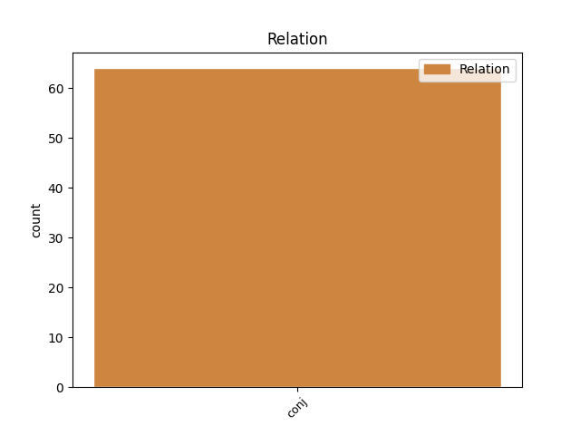
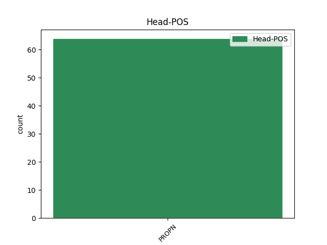
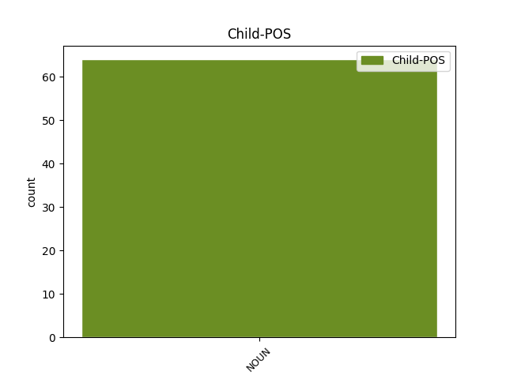

Distribution of features within this leaf



Agreement Rules sorted by frequency.
- When the dependent token is the conjunct(conj) of the head token, and the head token is PROPN and the dependent token is NOUN.
1 V. _ _ _ _ 0 _ _ _
2 Kairiša _ _ _ _ 0 _ _ _
3 iestudējumā _ _ _ _ 0 _ _ _
4 saskatāma _ _ _ _ 0 _ _ _
5 spēcīga _ _ _ _ 0 _ _ _
6 lietuviešu _ _ _ _ 0 _ _ _
7 metaforiskā _ _ _ _ 0 _ _ _
8 teātra _ _ _ _ 0 _ _ _
9 ietekme _ _ _ _ 0 _ _ _
10 , _ _ _ _ 0 _ _ _
11 kamēr _ _ _ _ 0 _ _ _
12 Dž. _ _ _ _ 0 _ _ _
13 Dž. _ _ _ _ 0 _ _ _
14 Džilindžera _ _ _ _ 0 _ _ _
15 Mollojs Mollojs PROPN npmsn1 Case=Nom|Gender=Masc|Number=Sing 0 _ _ _
16 jeb _ _ _ _ 0 _ _ _
17 dzīve dzīve NOUN ncfsn5 Case=Nom|Gender=Fem|Number=Sing 15 conj _ LvtbNodeId=a-z83-p93s5w17
18 bez _ _ _ _ 0 _ _ _
19 istabenes _ _ _ _ 0 _ _ _
20 ( _ _ _ _ 0 _ _ _
21 pēc _ _ _ _ 0 _ _ _
22 S. _ _ _ _ 0 _ _ _
23 Beketa _ _ _ _ 0 _ _ _
24 darbu _ _ _ _ 0 _ _ _
25 motīviem _ _ _ _ 0 _ _ _
26 ) _ _ _ _ 0 _ _ _
27 un _ _ _ _ 0 _ _ _
28 Concerto _ _ _ _ 0 _ _ _
29 grosso _ _ _ _ 0 _ _ _
30 nr. _ _ _ _ 0 _ _ _
31 1 _ _ _ _ 0 _ _ _
32 ( _ _ _ _ 0 _ _ _
33 režisora _ _ _ _ 0 _ _ _
34 paša _ _ _ _ 0 _ _ _
35 sacerēts _ _ _ _ 0 _ _ _
36 teksts _ _ _ _ 0 _ _ _
37 ) _ _ _ _ 0 _ _ _
38 darbības _ _ _ _ 0 _ _ _
39 , _ _ _ _ 0 _ _ _
40 teksta _ _ _ _ 0 _ _ _
41 un _ _ _ _ 0 _ _ _
42 skatuves _ _ _ _ 0 _ _ _
43 pasaules _ _ _ _ 0 _ _ _
44 fragmentiskumu _ _ _ _ 0 _ _ _
45 papildina _ _ _ _ 0 _ _ _
46 ar _ _ _ _ 0 _ _ _
47 absurda _ _ _ _ 0 _ _ _
48 filozofiju _ _ _ _ 0 _ _ _
49 . _ _ _ _ 0 _ _ _
Disagree Examples:
1 To _ _ _ _ 0 _ _ _
2 pierāda _ _ _ _ 0 _ _ _
3 ne _ _ _ _ 0 _ _ _
4 tikai _ _ _ _ 0 _ _ _
5 pats _ _ _ _ 0 _ _ _
6 “ _ _ _ _ 0 _ _ _
7 Pūks Pūks PROPN npmsn1 Case=Nom|Gender=Masc|Number=Sing 0 _ _ _
8 ” _ _ _ _ 0 _ _ _
9 , _ _ _ _ 0 _ _ _
10 bet _ _ _ _ 0 _ _ _
11 arī _ _ _ _ 0 _ _ _
12 dažādie _ _ _ _ 0 _ _ _
13 darbi darbs NOUN ncmpn1 Case=Nom|Gender=Masc|Number=Plur 7 conj _ LvtbNodeId=a-c55-p73s3w13|SpaceAfter=No
14 , _ _ _ _ 0 _ _ _
15 ko _ _ _ _ 0 _ _ _
16 sarakstījuši _ _ _ _ 0 _ _ _
17 gan _ _ _ _ 0 _ _ _
18 psihoterapeiti _ _ _ _ 0 _ _ _
19 un _ _ _ _ 0 _ _ _
20 psihoanalītiķi _ _ _ _ 0 _ _ _
21 , _ _ _ _ 0 _ _ _
22 gan _ _ _ _ 0 _ _ _
23 filosofi _ _ _ _ 0 _ _ _
24 , _ _ _ _ 0 _ _ _
25 meklējot _ _ _ _ 0 _ _ _
26 atbildes _ _ _ _ 0 _ _ _
27 uz _ _ _ _ 0 _ _ _
28 šīs _ _ _ _ 0 _ _ _
29 grāmatas _ _ _ _ 0 _ _ _
30 popularitātes _ _ _ _ 0 _ _ _
31 noslēpumu _ _ _ _ 0 _ _ _
32 . _ _ _ _ 0 _ _ _
1 Tāpēc _ _ _ _ 0 _ _ _
2 ābeles _ _ _ _ 0 _ _ _
3 , _ _ _ _ 0 _ _ _
4 ceriņi _ _ _ _ 0 _ _ _
5 un _ _ _ _ 0 _ _ _
6 citi _ _ _ _ 0 _ _ _
7 augi _ _ _ _ 0 _ _ _
8 Baltijas _ _ _ _ 0 _ _ _
9 jūras _ _ _ _ 0 _ _ _
10 piekrastē _ _ _ _ 0 _ _ _
11 uzzied _ _ _ _ 0 _ _ _
12 daudz _ _ _ _ 0 _ _ _
13 vēlāk _ _ _ _ 0 _ _ _
14 nekā _ _ _ _ 0 _ _ _
15 netālajā _ _ _ _ 0 _ _ _
16 Kuldīgā Kuldīga PROPN npfsl4 Case=Loc|Gender=Fem|Number=Sing 0 _ _ _
17 un _ _ _ _ 0 _ _ _
18 citās _ _ _ _ 0 _ _ _
19 iekšzemes _ _ _ _ 0 _ _ _
20 pilsētās pilsēta NOUN ncfpl4 Case=Loc|Gender=Fem|Number=Plur 16 conj _ LvtbNodeId=a-c61-p79s6w20
21 un _ _ _ _ 0 _ _ _
22 ciemos _ _ _ _ 0 _ _ _
23 . _ _ _ _ 0 _ _ _
1 Paliek _ _ _ _ 0 _ _ _
2 Mihaels Mihaels PROPN npmsn1 Case=Nom|Gender=Masc|Number=Sing 0 _ _ _
3 un _ _ _ _ 0 _ _ _
4 divi _ _ _ _ 0 _ _ _
5 pērtiķi pērtiķis NOUN ncmpn2 Case=Nom|Gender=Masc|Number=Plur 2 conj _ LvtbNodeId=a-d137-p723s2w5|SpaceAfter=No
6 . _ _ _ _ 0 _ _ _
1 Pēteris _ _ _ _ 0 _ _ _
2 , _ _ _ _ 0 _ _ _
3 kaimiņu _ _ _ _ 0 _ _ _
4 vientuļnieks _ _ _ _ 0 _ _ _
5 , _ _ _ _ 0 _ _ _
6 kušinot _ _ _ _ 0 _ _ _
7 lēni _ _ _ _ 0 _ _ _
8 veda _ _ _ _ 0 _ _ _
9 zirgu _ _ _ _ 0 _ _ _
10 , _ _ _ _ 0 _ _ _
11 aiz _ _ _ _ 0 _ _ _
12 ratiem _ _ _ _ 0 _ _ _
13 cienīgi _ _ _ _ 0 _ _ _
14 soļoja _ _ _ _ 0 _ _ _
15 Adalberts _ _ _ _ 0 _ _ _
16 , _ _ _ _ 0 _ _ _
17 tad _ _ _ _ 0 _ _ _
18 Helēna Helēna PROPN npfsn4 Case=Nom|Gender=Fem|Number=Sing 0 _ _ _
19 un _ _ _ _ 0 _ _ _
20 tad _ _ _ _ 0 _ _ _
21 visi _ _ _ _ 0 _ _ _
22 septiņi _ _ _ _ 0 _ _ _
23 vāķētāji vāķētājs NOUN ncmpn1 Case=Nom|Gender=Masc|Number=Plur 18 conj _ LvtbNodeId=a-d28-p171s2w23|SpaceAfter=No
24 . _ _ _ _ 0 _ _ _
1 Andris _ _ _ _ 0 _ _ _
2 jau _ _ _ _ 0 _ _ _
3 safotografējis _ _ _ _ 0 _ _ _
4 Viktoru Viktors PROPN npmsa1 Case=Acc|Gender=Masc|Number=Sing 0 _ _ _
5 un _ _ _ _ 0 _ _ _
6 viņa _ _ _ _ 0 _ _ _
7 mīluļus mīlulis NOUN ncmpa2 Case=Acc|Gender=Masc|Number=Plur 4 conj _ LvtbNodeId=a-p10926-p14s1w7
8 un _ _ _ _ 0 _ _ _
9 grasās _ _ _ _ 0 _ _ _
10 likt _ _ _ _ 0 _ _ _
11 fotoaparātu _ _ _ _ 0 _ _ _
12 somā _ _ _ _ 0 _ _ _
13 , _ _ _ _ 0 _ _ _
14 bet _ _ _ _ 0 _ _ _
15 Viktors _ _ _ _ 0 _ _ _
16 smej _ _ _ _ 0 _ _ _
17 : _ _ _ _ 0 _ _ _
18 " _ _ _ _ 0 _ _ _
19 Pagaidi _ _ _ _ 0 _ _ _
20 , _ _ _ _ 0 _ _ _
21 pagaidi _ _ _ _ 0 _ _ _
22 , _ _ _ _ 0 _ _ _
23 man _ _ _ _ 0 _ _ _
24 taču _ _ _ _ 0 _ _ _
25 ir _ _ _ _ 0 _ _ _
26 vēl _ _ _ _ 0 _ _ _
27 viens _ _ _ _ 0 _ _ _
28 dzīvnieks _ _ _ _ 0 _ _ _
29 ! _ _ _ _ 0 _ _ _
30 " _ _ _ _ 0 _ _ _